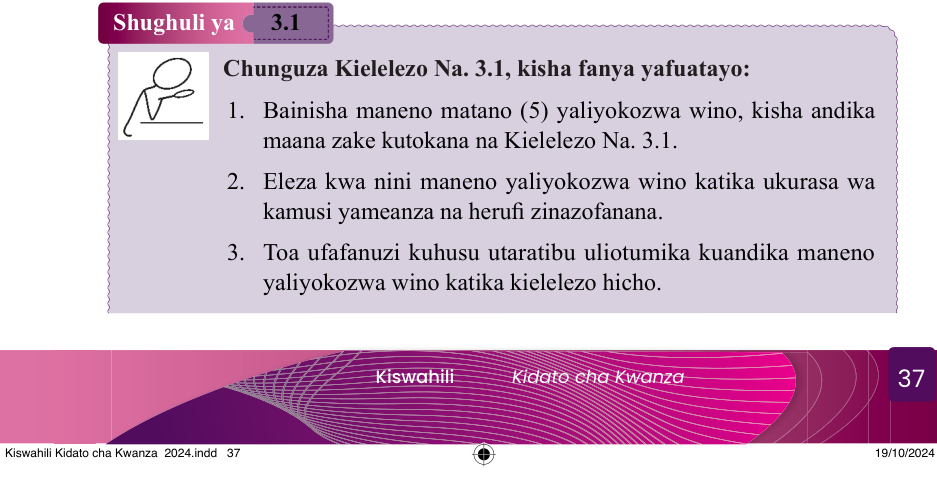

Furaha alipoona hali hiyo, aliamua kushinda na babu yake siku nzima bustanini.
Furaha aliendelea kumsimulia matukio mbalimbali.
Kwa kila tukio, mwanga wa kumbukumbu ulizuka machoni pa Masika.
Jua lilipozama, Furaha na Masika walirudi nyumbani.
Masika alimshukuru mjukuu wake kwa kumpa siku ya kukumbuka yaliyosahaulika.
Maswali
1. Nani alikuwa mtu wa furaha na tabasamu katika habari uliyoisoma?
2. Nini maana za maneno yaliyokozwa wino katika habari uliyoisoma?
3. Furaha aligundua kuwa babu yake ameanza kufanya nini?
4. Ni funzo gani ulilolipata kutokana na habari uliyoisoma?
5. Nini tofauti ya maneno yafuatayo?
(a) tabasamu na cheka
(b) mchana na kutwa
(c) kumbukumbu na kumbuka
Zingatia
Kamusi ni kitabu cha rejea chenye orodha ya maneno na ufafanuzi wake yaliyopangwa kwa utaratibu maalumu wa kialfabeti (A – Z).
Maneno hayo hukusanywa kutoka kwa wazungumzaji wa lugha inayotungiwa kamusi na hutolewa ufafanuzi wa maana zake kwa lugha hiyohiyo au kwa lugha nyingine.
Kwa kawaida, maneno hufafanuliwa kwa namna ambayo msomaji huweza kuelewa.
Hata hivyo, ufafanuzi wa maneno kwenye kamusi hutegemea lengo la kamusi inayohusika.
Kuna aina mbalimbali za kamusi.
Kuna kamusi ya lugha moja, yaani orodha ya maneno pamoja na maelezo yake yanakuwa katika lugha moja.
Vilevile, kuna kamusi ya lugha mbili au zaidi, kwa maana ya neno kuwa lugha fulani na kufafanuliwa kwa maelezo ya lugha nyingine.
Aidha, kamusi inaweza kuwa ya somo mahususi au uwanja fulani kama vile methali, vitendawili, nahau na visawe.
Shughuli ya 3.1
Chunguza Kielelezo Na. 3.1, kisha fanya yafuatayo:
1. Bainisha maneno matano (5) yaliyokozwa wino, kisha andika maana zake kutokana na Kielelezo Na. 3.1.
2. Eleza kwa nini maneno yaliyokozwa wino katika ukurasa wa kamusi yameanza na herufi zinazofanana.
3. Toa ufafanuzi kuhusu utaratibu uliotumika kuandika maneno yaliyokozwa wino katika kielelezo hicho.
